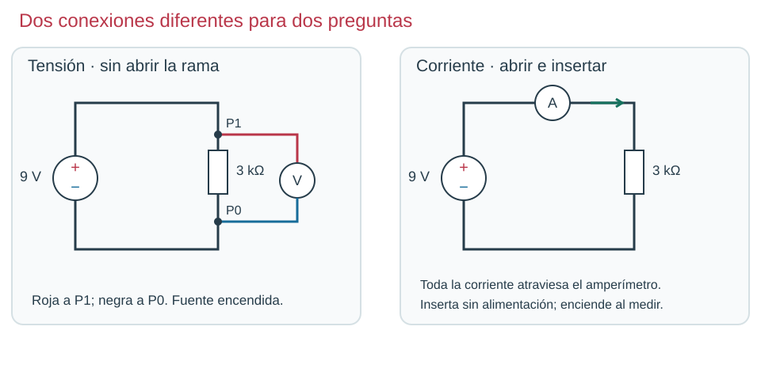
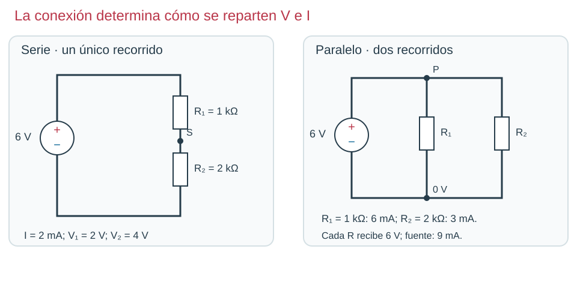
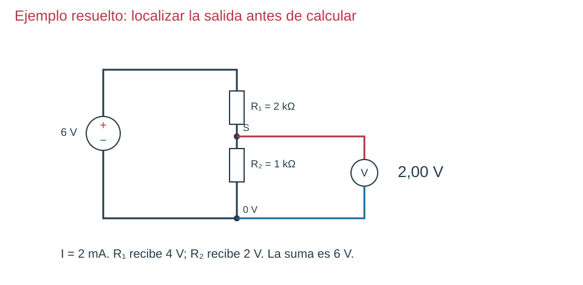
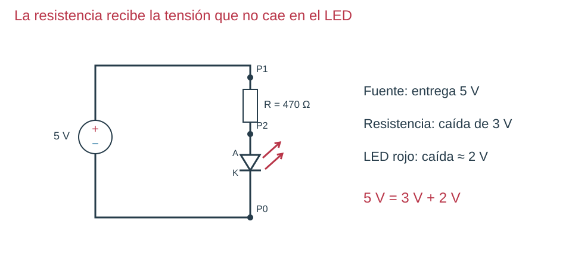

Contenido
Resuelve mirando el circuito, no buscando una operación
Usa siempre esta secuencia: esquema → datos → incógnita → relación → unidades → cálculo → interpretación. Los ejemplos siguientes retoman los circuitos que ya has aprendido a leer.

1 · Intensidad en una resistencia
Datos: 9 V, 3 kΩ. Busco: I. Relación: I = V/R. Conversión: 3 kΩ = 3000 Ω. Cálculo: 9/3000 = 0,003 A = 3 mA. Interpretación: toda la rama conduce 3 mA; el amperímetro debe intercalarse, no ponerse sobre la fuente.

2 · Compara dos asociaciones
Datos: 1000 Ω, 2000 Ω y 6 V. Busco: Req e intensidad total. Serie: Req = 1000+2000 = 3000 Ω; I = 6/3000 = 0,002 A = 2 mA. Caídas: 2 V y 4 V. Paralelo: Req = 1000×2000/3000 ≈ 666,7 Ω; I total = 6/666,7 ≈ 9 mA. Ramas: 6 mA y 3 mA. Interpretación: compartir tensión no implica compartir intensidad.

3 · Salida del divisor
Busco: tensión S respecto de 0 V, sin carga. Relación: Vsalida = Vin·R₂/(R₁+R₂). Conversión: ambas resistencias en kΩ, por lo que su cociente no tiene unidad. Cálculo: 6×1/(2+1) = 2 V. Comprobación: R₁ recibe 4 V y R₂ 2 V; suman 6 V. El voltímetro va sobre R₂, no sobre ambas.

4 · Corriente del LED
Datos: fuente 5 V; caída del LED estimada 2 V; R = 470 Ω. Busco: I. Relación: I = VR/R. Caída: VR = 5−2 = 3 V. Cálculo: 3/470 = 0,00638 A = 6,38 mA. Interpretación: usar 5/470 ignoraría el LED y sobreestimaría la intensidad.

5 · Tiempo de carga
Busco: τ y tiempo aproximado de finalización. Conversión: 10 kΩ = 10 000 Ω; 100 µF = 0,0001 F. Relación y cálculo: τ = RC = 1 s; 5τ = 5 s. Interpretación: a 1 s aún no está completamente cargado; su tensión es aproximadamente 3,16 V si la fuente es de 5 V.
Ahora tú: explica antes de comprobar
Resuelve con ayuda: 4 V sobre 2 kΩ. Primero convierte R, después calcula I y dibuja el instrumento.
Solución razonada, sin cronómetro
2000 Ω; I = 4/2000 = 0,002 A = 2 mA. El amperímetro se intercala en la rama. Si mides tensión, el voltímetro se conecta entre los extremos de R.
Aplicación autónoma: cálculo y diagnóstico
- Divisor a 9 V, 2 kΩ arriba y 1 kΩ abajo: calcula salida y corriente.
- LED con fuente 6 V, caída 2 V y corriente deseada 8 mA: calcula resistencia.
- RC con 22 kΩ y 100 µF: calcula τ. Predice el efecto de duplicar C.
- En el dibujo de protoboard, explica por qué dos patas en a3 y e3 no forman una resistencia entre nodos distintos.
Soluciones razonadas
1: 3 V; 3 mA. 2: 8 mA = 0,008 A; R = 4/0,008 = 500 Ω. 3: 22 000×0,0001 = 2,2 s; al duplicar C, 4,4 s. 4: a3 y e3 pertenecen al mismo conductor interno; la resistencia queda puenteada.
Comprueba y razona
Interpreta, decide y explica
Responde antes de abrir la explicación. Sin cronómetro; usa Tab y Entrar para desplegarla.
Elige la figura del divisor y explica dónde medirías 2 V con 6 V, R₁=2 kΩ y R₂=1 kΩ.
Ver razonamiento
Roja en S y negra en 0 V, sobre R₂. La fracción inferior es 1/3 y 6×1/3=2 V.
En el circuito RC, ¿qué conversión evita que τ salga un millón de veces mayor?
Ver razonamiento
µF a F: 100 µF = 0,0001 F. Usar 100 como si fueran faradios cambia totalmente el tiempo.